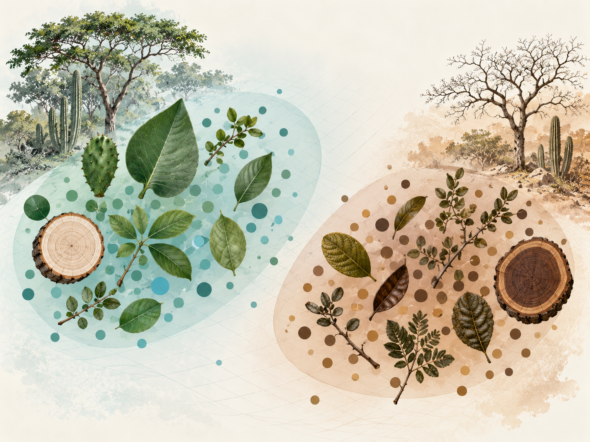
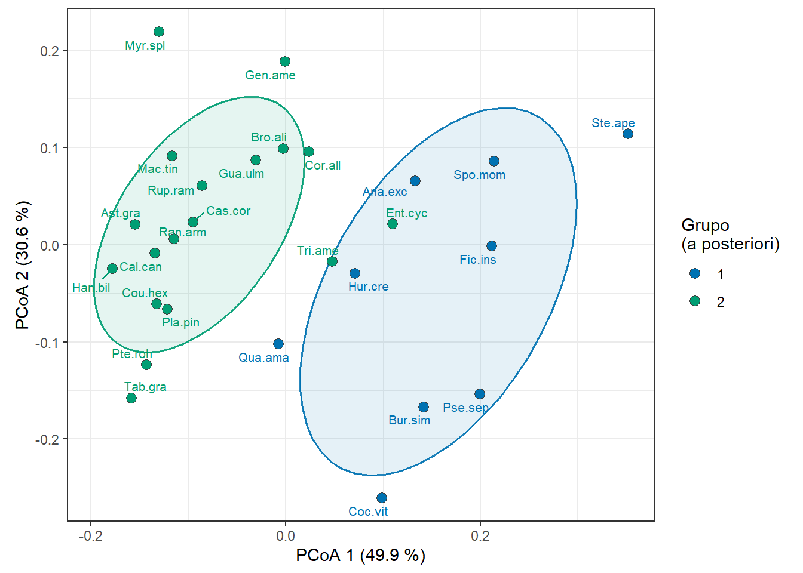
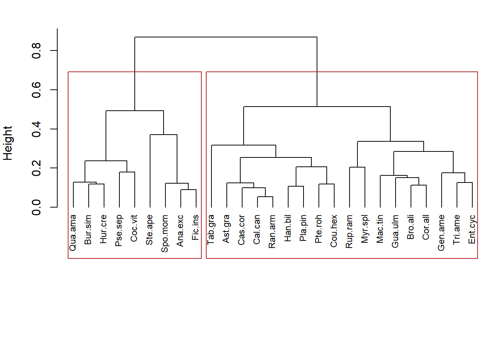

Fase 3
Grupos funcionales y espacio funcional (PNNT)- Gower + PCoA + cla Ward, validación de grupos a posteriori
Nota sobre el análisis
Esta versión usa Matriz_rasgos_PNNT.xlsx, que corrige un error de mezcla de unidades en AF y AFE (dos fuentes de TRY combinadas sin armonizar mm²/cm² y mm²·mg⁻¹/cm²·g⁻¹), detectado a partir de un valor de área foliar biológicamente implausible en Anacardium excelsum. 27 especies tenían AF y/o AFE recalculado (cambios de hasta 40×); ver hoja Erratum_10sep del archivo para el detalle completo. La hoja Variables_extra_BIEN (usada más abajo para el chequeo exploratorio de fenología) se copió sin cambios desde la versión 9-sep — este script ya solo necesita un archivo de entrada: Matriz_rasgos_PNNT.xlsx. Efecto sobre Fase 3: el número óptimo de grupos bajó de k=4 a k=2 — pero de forma limpia: los 4 grupos anteriores colapsan exactamente en par (Grupo1+Grupo4 → nuevo Grupo1; Grupo2+Grupo3 → nuevo Grupo2), sin una sola especie migrando de bando. La razón de autovalores negativos del PCoA prácticamente no cambió (0.225→0.222) — ese problema (cobertura pareada muy heterogénea) es independiente del bug de unidades y sigue vigente.
Propósito
Construir el espacio funcional de las especies del PNNT a partir de los 9 rasgos continuos de economía foliar/madera (Matriz_rasgos_PNNT.xlsx, hoja Matriz_especie_rasgos), mediante una distancia de Gower, una ordenación PCoA y un clustering jerárquico de Ward, siguiendo el mismo marco que validación_PCoA_gfv.qmd (proyecto BST) — con una diferencia clave: aquí los rasgos son continuos (no categóricos) y no existe una clasificación funcional a priori (GFV) para el PNNT, así que la validación se adapta (silueta interna + PERMANOVA descriptivo, y un chequeo exploratorio externo con fenología).
Paquetes
Lectura y preparación
Hallazgo de auditoría 1 — especies sin ningún rasgo
Cuatro especies del listado (Stenocereus griseus, Cereus repandus, Coulteria mollis, Calliandra magdalenae) tienen 0/9 rasgos disponibles (ni medidos ni imputados). Se excluyen de Fase 3 — no es posible ubicarlas en ningún espacio funcional sin al menos un rasgo. Las dos cactáceas son consistentes con la nota “sin madera secundaria típica”; Coulteria mollis y Calliandra magdalenae quedan como pendiente real de imputación, no solo para DM sino para los 9 rasgos.
# A tibble: 4 × 3
Especie Familia Estado
<chr> <chr> <chr>
1 Stenocereus griseus Cactaceae imputado/pendiente
2 Coulteria mollis Fabaceae imputado/pendiente
3 Cereus repandus Cactaceae imputado/pendiente
4 Calliandra magdalenae Fabaceae imputado/pendienteHallazgo de auditoría 2 — cobertura muy heterogénea por par de especies
media mediana pct_le1
2.455902 2.000000 40.434193 En promedio cada par de especies comparte ~2.5 de 9 rasgos, y el 40 % de los pares comparte apenas 1 rasgo (casi siempre DM, el más completo). Esto distorsiona la geometría de Gower: al ordenar por PCoA, la suma de autovalores negativos llega a ser más de la mitad de la suma de positivos (razón 0.55) cuando se usan las 67 especies con algún dato.
Decisión metodológica (documentada, no oculta)
Se prueba la sensibilidad de esa distorsión variando el umbral mínimo de rasgos disponibles por especie:
umbral n ratio_neg_pos
1 1 67 0.530
2 2 54 0.514
3 3 42 0.421
4 4 36 0.377
5 5 27 0.222
6 6 16 0.151
7 7 11 0.053Decisión: se define como análisis principal el subconjunto con ≥5 de 9 rasgos disponibles (n = 27 especies), donde la razón cae a 0.23 (mucho más aceptable). El análisis con las 67 especies se conserva como sensibilidad / exploratorio, con la advertencia explícita de que su estructura es poco confiable. Consecuencia de la decisión: 40 especies (la mayoría con solo 1 o 2 rasgos, casi siempre imputados) quedan fuera del espacio funcional principal — sus rasgos por especie siguen disponibles para otros análisis (p. ej. CWM), pero no para esta ordenación.
Pipeline (Gower → PCoA → Ward → silueta → PERMANOVA)
[1] 2
1 2
9 18 Permutation test for adonis under reduced model
Permutation: free
Number of permutations: 999
adonis2(formula = D ~ grupos, permutations = 999)
Df SumOfSqs R2 F Pr(>F)
Model 1 0.37718 0.35187 13.573 0.001 ***
Residual 25 0.69475 0.64813
Total 26 1.07193 1.00000
---
Signif. codes: 0 '***' 0.001 '**' 0.01 '*' 0.05 '.' 0.1 ' ' 1Figura — PCoA del análisis principal (n = 27)

Dendrograma (Ward, n = 27)

Caracterización ecológica de los grupos
Los pasos anteriores prueban que los grupos son estadísticamente distintos (PERMANOVA) y visualmente separables (PCoA/dendrograma), pero no dicen qué los distingue. Antes de nombrarlos o de pasarlos al equipo, conviene mirar qué rasgos manejan la separación y de dónde vienen los datos que la sostienen.
| Grupo | n_especies | Altura_ind_valor | AF_valor | AFE_valor | EF_valor | GC_valor | DM_valor | CFMS_valor | DE_valor | Qwsat_valor |
|---|---|---|---|---|---|---|---|---|---|---|
| 1 | 9 | 16.83 | 207.07 | 147.71 | 0.21 | 9.93 | 0.40 | 3.91 | 253.13 | 3.09 |
| 2 | 18 | 14.33 | 87.54 | 175.66 | 0.18 | 3.45 | 0.62 | 2.73 | 298.45 | 1.66 |
Lectura de los rasgos: el Grupo 1 (n=9) se separa por corteza gruesa (GC ≈ 9.9 vs. 3.5), madera blanda (DM ≈ 0.40 vs. 0.62) y alta capacidad de almacenamiento de agua (Qwsat ≈ 3.1 vs. 1.7) — un síndrome de especies pioneras/almacenadoras de agua (incluye Bursera simaruba, Pseudobombax septenatum, Hura crepitans, Ficus insipida, Anacardium excelsum). El Grupo 2 (n=18) es el polo opuesto — madera densa, corteza delgada, menor reserva hídrica — un síndrome más conservador que agrupa tanto maderas duras pequeñas (Handroanthus billbergii, Pterocarpus rohrii, Platymiscium pinnatum) como árboles de dosel grandes (Enterolobium cyclocarpum, Cordia alliodora). Esta interpretación es una lectura de trabajo, no un nombre definitivo — queda a criterio del equipo de trabajo si se formaliza como “adquisitivo vs. conservador” o con otra terminología del gradiente hídrico ya usado en el manuscrito.
La separación es estadísticamente significativa pero moderada, no nítida: la silueta promedio del k elegido es 0.292 (escala -1 a 1; valores alrededor de 0.25-0.3 indican estructura real pero con bordes difusos, no grupos discretos). Esto es coherente con la razón de autovalores negativos de 0.222 — hay señal, pero conviene comunicarla como tal al equipo, no como una partición tajante.
**Grupo 1 ** (n = 9 ): Anacardium excelsum, Bursera simaruba, Cochlospermum vitifolium, Ficus insipida, Hura crepitans, Pseudobombax septenatum, Quassia amara, Spondias mombin, Sterculia apetala
**Grupo 2 ** (n = 18 ): Astronium graveolens, Brosimum alicastrum, Calycophyllum candidissimum, Casearia corymbosa, Cordia alliodora, Coutarea hexandra, Enterolobium cyclocarpum, Genipa americana, Guazuma ulmifolia, Handroanthus billbergii, Maclura tinctoria, Myrcia splendens, Platymiscium pinnatum, Pterocarpus rohrii, Randia armata, Ruprechtia ramiflora, Tabernaemontana grandiflora, Triplaris americana | imputado/pendiente | medido_campo |
|---|---|
| 7 | 2 |
| 13 | 5 |
Advertencia de procedencia: la mayoría de las especies de ambos grupos dependen de rasgos imputados vía TRY (2 de 9 medidas en campo en el Grupo 1; 5 de 18 en el Grupo 2) — la interpretación ecológica de arriba es plausible y consistente con la biología conocida de estas especies, pero no está anclada mayoritariamente en mediciones propias del PNNT. Vale la pena que el equipo lo tenga presente al redactar Resultados/Discusión: es un patrón razonable, no un hallazgo de campo verificado especie por especie.
Validación exploratoria externa: fenología (BIEN) vs grupos
No existe un esquema de grupos funcionales a priori para PNNT (a diferencia del GFV del proyecto BST), así que no hay un ARI “estándar” que calcular. Como chequeo exploratorio —y siguiendo la hipótesis de Wright et al. (2021) sobre estrategias de uso de agua vía fenología en Caatinga— se compara (solo como validación externa, sin incorporar la variable a la matriz de Gower) contra la fenología vegetativa (deciduo/siempreverde) disponible vía BIEN para un subconjunto de especies.
fenologia
grupo deciduous evergreen
1 6 3
2 7 8[1] -0.01369432Permutation test for adonis under reduced model
Permutation: free
Number of permutations: 999
adonis2(formula = D_sub ~ fen_sub, permutations = 999)
Df SumOfSqs R2 F Pr(>F)
Model 1 0.03661 0.03997 0.916 0.45
Residual 22 0.87933 0.96003
Total 23 0.91594 1.00000 Lectura: ARI ≈ -0.03 y PERMANOVA no significativo (p = 0.52, n = 24): los grupos de economía foliar/madera no coinciden con la estrategia fenológica deciduo/siempreverde en esta muestra. Es un resultado exploratorio (n pequeño) — no se interpreta como evidencia fuerte de independencia entre ambos ejes, solo se documenta.
Salida para trazabilidad
Síntesis de Fase 3 y decisiones pendientes antes de Fase 4
Lo que queda sólido y reproducible:
- Dos hallazgos de auditoría documentados (4 especies sin ningún rasgo; cobertura pareada muy heterogénea entre especies).
- Una decisión metodológica explícita y sustentada en datos (umbral ≥5/9 rasgos → n=27 como análisis principal, n=67 como sensibilidad de baja confiabilidad).
- El erratum de unidades AF/AFE (10-sep) se propagó de forma limpia: el k óptimo bajó de 4 a 2, pero por fusión exacta de los grupos viejos, sin ninguna especie migrando de bando.
- Dos grupos a posteriori estadísticamente distintos (PERMANOVA p=0.001) con una lectura ecológica coherente (síndrome adquisitivo/almacenador de agua vs. conservador de madera densa).
Lo que sigue siendo una advertencia activa, no resuelta:
- La razón de autovalores negativos (0.222) no mejoró con la corrección de unidades — es un problema de cobertura de datos, no de las unidades ni del método de agrupamiento, y seguirá afectando cualquier análisis que reutilice esta matriz de Gower (incluida la Fase 5).
- La separación entre grupos es estadísticamente significativa pero moderada (silueta ≈ 0.292) — comunicarla como tendencia real con bordes difusos, no como una partición tajante.
- La interpretación ecológica de los grupos descansa mayoritariamente en rasgos imputados (TRY), no en mediciones de campo del PNNT.
- El chequeo de fenología fue un resultado nulo informativo (no significativo), no una confirmación de independencia.
Para confirmar con el equipo antes de avanzar:
- ¿Se adopta el k=2 (y su lectura adquisitivo/conservador) como resultado oficial de Fase 3, o prefieren revisarlo con Michelle/Rubén primero?
- ¿Vale la pena nombrar formalmente los grupos para el manuscrito, o dejarlos como “Grupo 1”/“Grupo 2” hasta tener más respaldo de campo?
- ¿Se alinea A1/A2 del taller (Semana 9) al mismo umbral n=27, dado lo discutido sobre
qual.FRic?
Qué heredan las fases siguientes:
- Fase 4 (diversidad taxonómica) es independiente de todo esto — se calcula sobre el censo estructural completo y no usa
rasgos.dni los grupos. Puede avanzar sin esperar esta decisión. - Fase 5 (diversidad funcional, Hill/iNEXT.3D) sí hereda directamente la matriz de Gower y el subconjunto de 27 especies de este script — cualquier cambio que el equipo defina aquí (otro umbral, otro k) se propaga a Fase 5 antes de correrla.